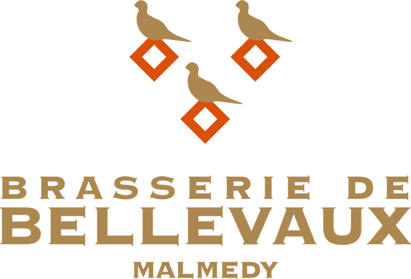
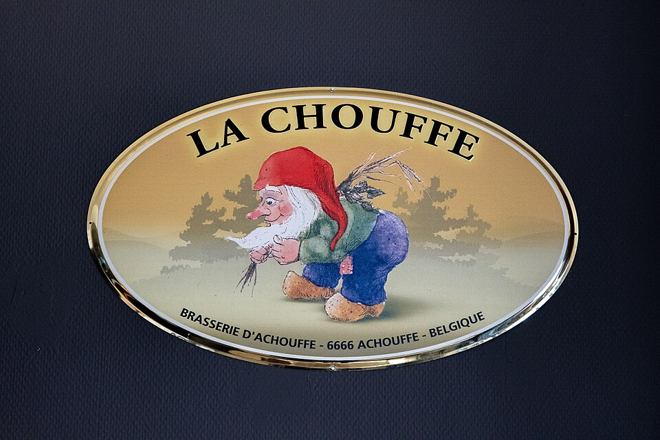
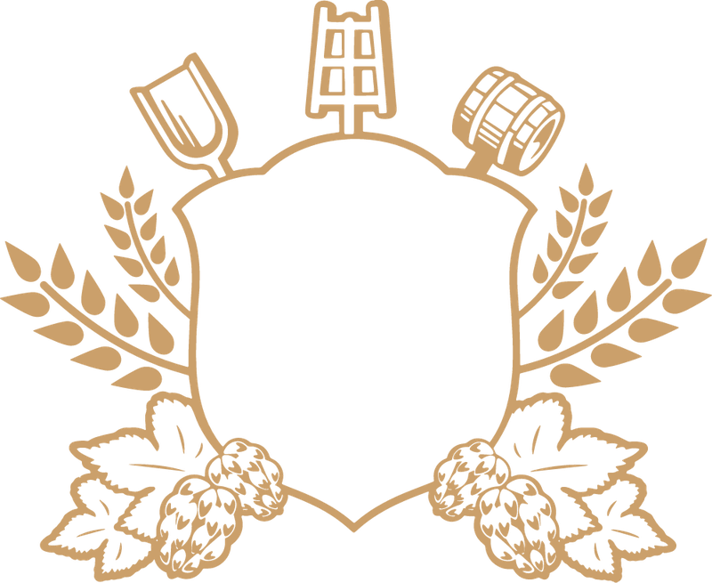
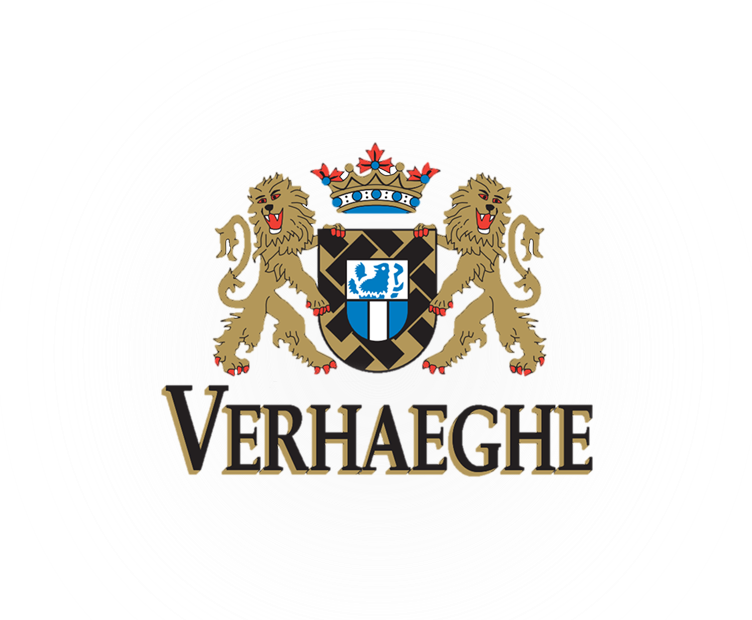

벨기에 브랜드 51
벨기에에서 시작한 브랜드 51개를 로고와 함께 모았습니다. 대표적인 벨기에 브랜드로는 고디바(GODIVA), 마치(Match), 스탄다르트 부크한덜(Standaard Boekhandel), 무더 바벨뤼터(Moeder Babelutte), 엘디(Eldi), 에이에스 어드벤처(A.S.Adventure) 등이 있습니다. 수록 기준은 검수된 브랜드 설명이나 공식 웹사이트가 일치하는 위키데이터 개체에서 기원 국가가 확인된 경우로 한정했습니다.
다른 국가 보기
국가별 전체 →산업별로는 식음료 40개, 리테일·커머스 3개, 모빌리티 3개, 기술·전자 2개 순입니다. 설립연도가 확인된 브랜드는 39개이며 가장 오래된 곳은 1833년, 가장 최근은 2006년에 시작했습니다. 시기별로는 1900년 이전 11개, 1900~1949년 11개, 1950~1999년 10개, 2000년 이후 7개입니다. 수록 자료로는 로고 이미지 49개, 연혁 타임라인 1개를 갖췄습니다. 이 가운데 49개는 공식 웹사이트가 일치하는 위키데이터 개체로 연결해 두었습니다.
벨기에 브랜드 목록
 마치Match벨기에 · 1934년
마치Match벨기에 · 1934년마치(Match)는 1934년 벨기에에서 시작된, 프랑스·벨기에·룩셈부르크에서 운영되는 슈퍼마켓 체인이다.
 고디바GODIVA벨기에 · 1926년
고디바GODIVA벨기에 · 1926년고디바(Godiva)는 1926년 벨기에 브뤼셀에서 창립된 프리미엄 초콜릿 브랜드이다.
 무더 바벨뤼터Moeder Babelutte벨기에 · 1850년
무더 바벨뤼터Moeder Babelutte벨기에 · 1850년무더 바벨뤼터(Moeder Babelutte)는 전통 바벨뤼터(꿀맛 토피)와 초콜릿·프랄린을 파는 벨기에 가족경영 제과 체인이다.
 에이에스 어드벤처A.S.Adventure벨기에
에이에스 어드벤처A.S.Adventure벨기에에이에스 어드벤처(A.S.Adventure)는 벨기에의 선도적인 아웃도어 용품 소매 체인이다.
 반호르Van Hool벨기에 · 1947년
반호르Van Hool벨기에 · 1947년반호르(Van Hool)는 1947년에 설립된 벨기에의 자동차 제조사이다.
 브뤼셀 항공Brussels Airlines벨기에 · 2006년
브뤼셀 항공Brussels Airlines벨기에 · 2006년브뤼셀 항공(Brussels Airlines)은 2001년 도산한 벨기에의 플래그 캐리어 사베나 벨기에 항공을 대신하기 위해 2006년에 생긴…
 베스트말레 브루어리Westmalle Brewery벨기에 · 1836년
베스트말레 브루어리Westmalle Brewery벨기에 · 1836년베스트말레 브루어리(Westmalle Brewery)는 벨기에 Westmalle Abbey 안에 있는 트라피스트 양조장이다.
 주필러Jupiler벨기에 · 1966년
주필러Jupiler벨기에 · 1966년주필러(Jupiler)는 1966년 출시된 벨기에 맥주이다.
 앤하이저부시 인베브Anheuser-Busch InBev벨기에 · 1977년
앤하이저부시 인베브Anheuser-Busch InBev벨기에 · 1977년앤하이저부시 인베브(Anheuser-Busch InBev)는 벨기에 브뤼셀에 본사를 둔 맥주 제조 회사이다.
 벨기에 국철SNCB/NMBS벨기에 · 1926년
벨기에 국철SNCB/NMBS벨기에 · 1926년벨기에 국철(SNCB/NMBS)은 벨기에의 국영 철도 운행 회사이다.
 오두Odoo벨기에 · 2004년
오두Odoo벨기에 · 2004년오두(Odoo)는 2004년 설립되어 벨기에에서 출발한 ERP 및 그룹웨어 소프트웨어 브랜드이다.
 인베브InBev Belgium벨기에 · 2004년
인베브InBev Belgium벨기에 · 2004년인베브(InBev Belgium)는 벨기에의 맥주 회사로, 2004년 인터브루(Interbrew)와 암베브(AmBev)의 합병으로 탄생한 양조…
 KBC 그룹KBC Group벨기에 · 1998년
KBC 그룹KBC Group벨기에 · 1998년KBC 그룹(KBC Group)은 벨기에 브뤼셀에 본사를 둔 은행·보험 통합 금융그룹이다.
 스탄다르트 부크한덜Standaard Boekhandel벨기에 · 1919년
스탄다르트 부크한덜Standaard Boekhandel벨기에 · 1919년스탄다르트 부크한덜(Standaard Boekhandel)은 1919년 벨기에에서 시작한 서점 체인이다.
 De Koninck Brewery벨기에 · 1833년
De Koninck Brewery벨기에 · 1833년De Koninck Brewery는 1833년에 설립되어 안트베르펜에 본사를 둔 벨기에의 양조장이다.
 Duvel Moortgat Brewery벨기에 · 1871년
Duvel Moortgat Brewery벨기에 · 1871년Duvel Moortgat Brewery는 벨기에 안트베르펜주에서 1871년 설립된 양조장으로, 플랑드르 가족이 지배한다.
 Piedboeuf Brewery벨기에 · 1853년
Piedboeuf Brewery벨기에 · 1853년Piedboeuf Brewery는 벨기에 Jupille-sur-Meuse에 있는 양조장이다.
Umicore벨기에 · 1904년Umicore는 벨기에 브뤼셀에 본사를 둔 다국적 소재 기술 기업이다.
 St. Bernardus Brewery벨기에 · 1946년
St. Bernardus Brewery벨기에 · 1946년St. Bernardus Brewery는 벨기에의 Watou에 있는 양조장이다.
 3 Fonteinen벨기에
3 Fonteinen벨기에3 Fonteinen은 벨기에의 양조장으로, geuze와 kriek을 전문으로 한다.
 Dubuisson Brewery벨기에
Dubuisson Brewery벨기에Dubuisson Brewery는 1769년 벨기에 Pipaix에서 설립된 가족 경영 양조장이다.
 Het Anker Brewery벨기에
Het Anker Brewery벨기에Het Anker Brewery는 벨기에 메헬렌에 있는 플랑드르 양조장이다.
 Corsendonk벨기에 · 1982년
Corsendonk벨기에 · 1982년Corsendonk는 벨기에의 맥주 브랜드이다.
 De Struise brewers벨기에 · 2001년
De Struise brewers벨기에 · 2001년De Struise brewers는 벨기에 Oostvleteren에 있는 소규모 양조장(마이크로브루어리)이다.
 Brasserie à vapeur벨기에
Brasserie à vapeur벨기에Brasserie à vapeur는 벨기에 Pipaix에 있는 양조장이다.
 Westvleteren Brewery벨기에 · 1838년
Westvleteren Brewery벨기에 · 1838년Westvleteren Brewery는 벨기에 Vleteren의 성 식스투스 트라피스트 수도원에서 1838년에 설립된 양조장이다.
 Achel Brewery벨기에 · 1998년
Achel Brewery벨기에 · 1998년Achel Brewery는 벨기에 Hamont-Achel의 성 베네딕토 수도원 안에 있는 양조장이다.
 Alken-Maes벨기에 · 1921년
Alken-Maes벨기에 · 1921년Alken-Maes는 1988년 Maes와 Cristal-Alken, 두 소규모 양조장이 합병해 만들어진 벨기에의 맥주 양조회사이다.
 Maes pils벨기에 · 1946년
Maes pils벨기에 · 1946년Maes pils는 Alken-Maes가 양조하는 벨기에의 필스 맥주이다.
 Pico brewery Alvinne벨기에 · 2003년
Pico brewery Alvinne벨기에 · 2003년Pico brewery Alvinne은 벨기에 도시 Zwevegem 근처의 마을 Moen에 있는 소규모 양조장이다.
 Belle-Vue Brewery벨기에 · 1913년
Belle-Vue Brewery벨기에 · 1913년Belle-Vue Brewery는 1913년 벨기에 브뤼셀의 Molenbeek에서 설립된 양조장이다.
 Cuvée des Trolls벨기에 · 2000년
Cuvée des Trolls벨기에 · 2000년Cuvée des Trolls는 벨기에 Pipaix의 Dubuisson Brewery와 Brasse-Temps 소규모 양조장에서 만드는…
 De Dolle Brouwers벨기에
De Dolle Brouwers벨기에De Dolle Brouwers는 벨기에 서플랑드르 주의 Esen에 본사를 둔 맥주 양조장이다.
 Van Steenberghe brewery벨기에
Van Steenberghe brewery벨기에Van Steenberghe brewery는 벨기에 동플랑드르의 Ertvelde에 있는 양조장이다.
 Brewery Brunehaut벨기에 · 1890년
Brewery Brunehaut벨기에 · 1890년Brewery Brunehaut는 벨기에 왈로니아의 Rongy-Brunehaut에 있는 양조장이다.

brewery of Bellevaux벨기에 · 2006년brewery of Bellevaux는 벨기에 리에주 주 말메디 자치체의 옛 코뮌 Bellevaux에 자리한 수제 맥주 양조장이다.
 John Martin벨기에
John Martin벨기에John Martin은 벨기에 Genval(Walloon Brabant)에 있는 맥주 양조 회사이다.
 Brouwerij Boon벨기에
Brouwerij Boon벨기에Brouwerij Boon은 벨기에 브뤼셀 인근 렘베이크에 있는 양조장이다.
 Huyghe Brewery벨기에 · 1906년
Huyghe Brewery벨기에 · 1906년Huyghe Brewery는 1906년 Leon Huyghe가 벨기에 동플랑드르의 Melle에 세운 양조장이다.

Brasserie d'Achouffe벨기에 · 1986년Brasserie d'Achouffe는 벨기에 Achouffe에 본사를 둔 맥주 양조장이다.
 Dupont brewery벨기에 · 1968년
Dupont brewery벨기에 · 1968년Dupont brewery는 벨기에 에노 서부 Tourpes(Leuze-en-Hainaut)에 있는 양조장이다.
 De Proefbrouwerij벨기에 · 1996년
De Proefbrouwerij벨기에 · 1996년De Proefbrouwerij는 1996년 설립된 벨기에 플랑드르 지역의 양조장이다.
 Lefebvre brewery벨기에 · 1876년
Lefebvre brewery벨기에 · 1876년Lefebvre brewery는 벨기에 왈로니아의 Quenast에 있는 양조장이다.
 Saint-Feuillien beer벨기에 · 1873년
Saint-Feuillien beer벨기에 · 1873년Saint-Feuillien beer는 벨기에 Le Rœulx에 있는 St.

La Binchoise벨기에 · 1986년La Binchoise는 벨기에 뱅슈(Binche)에 있는 맥주 양조장이다.
 Gulden Draak벨기에
Gulden Draak벨기에Gulden Draak은 벨기에의 Brouwerij Van Steenberge가 양조하는 알코올 도수 10.5%의 짙은 색 맥주이다.
 Brasserie Caracole벨기에
Brasserie Caracole벨기에Brasserie Caracole은 벨기에 디낭 인근 Falmignoul에 있는 수제 양조장이다.

Brewery Verhaeghe벨기에 · 1875년Brewery Verhaeghe(Brouwerij Verhaeghe)는 벨기에 서플랑드르주 Vichte에 있는 소규모 양조장이다.